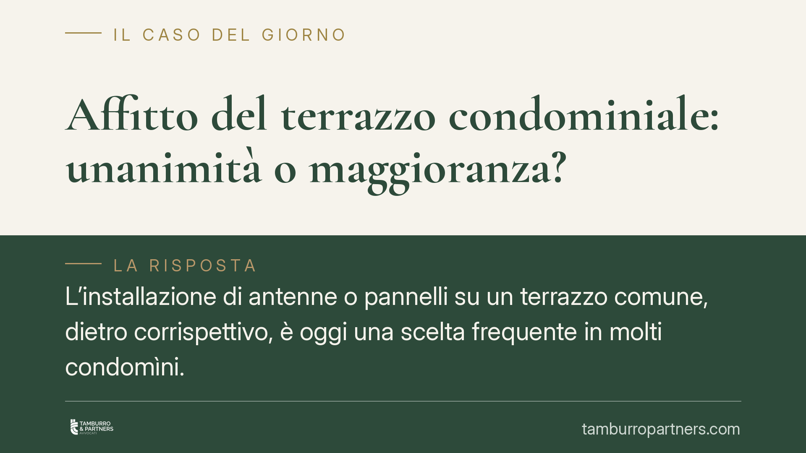

Affitto del terrazzo condominiale: unanimità o maggioranza?
L'installazione di antenne o pannelli su un terrazzo comune, dietro corrispettivo, è oggi una scelta frequente in molti condomìni. Ma con quale maggioranza si decide? La giurisprudenza distingue: in alcuni casi basta la maggioranza qualificata, in altri serve il consenso di tutti i condomini. Capire la differenza evita delibere impugnabili e responsabilità per l'amministratore.

Il caso: affittare gli spazi comuni
Sempre più assemblee valutano la possibilità di concedere in locazione porzioni di parti comuni - tipicamente il lastrico solare o il terrazzo - ad aziende esterne di telecomunicazioni per l'installazione di antenne o impianti tecnologici. L'operazione genera un canone che alleggerisce le spese condominiali, ma solleva un problema pratico ricorrente: con quale maggioranza va approvata?
La risposta non è unica. Dipende dalla natura e dagli effetti concreti del contratto sul bene comune.
Inquadramento normativo
Il punto di partenza è la distinzione tra atti di ordinaria amministrazione e atti che incidono in modo significativo sul godimento delle parti comuni.
L'amministratore, ai sensi degli artt. 1130 e 1131 c.c., gestisce le parti comuni e rappresenta il condominio, ma nei limiti delle attribuzioni ordinarie e delle delibere assembleari. L'art. 1108 c.c. - richiamato in tema di comunione e applicato per analogia al condominio - richiede il consenso di tutti i partecipanti per gli atti di alienazione o di costituzione di diritti reali, e per le locazioni ultranovennali.
L'art. 1136 c.c. fissa i quorum deliberativi. Le innovazioni disciplinate dall'art. 1120 c.c. richiedono maggioranze qualificate. Il mandato conferito all'amministratore, poi, va letto anche alla luce dell'art. 1708 c.c., che circoscrive il mandato agli atti necessari al suo compimento.
L'orientamento della giurisprudenza
Cassazione e diversi tribunali di merito (Lecce, Lecco, Milano, Roma) hanno affrontato il tema con esiti che ruotano attorno ad alcuni criteri:
Durata del contratto. La locazione che supera i nove anni è considerata atto eccedente l'ordinaria amministrazione: richiede il consenso unanime, perché produce effetti assimilabili alla costituzione di un diritto reale sul bene.
Incidenza sull'uso del bene. Se l'affitto sottrae ai condomini l'uso diretto del terrazzo, o ne compromette la fruibilità ("inservibilità"), la scelta non può essere imposta a maggioranza: incide sul diritto di ciascun condomino sulla cosa comune.
Natura dell'intervento. Quando l'installazione comporta opere straordinarie o modifiche strutturali del lastrico, si entra nel perimetro delle innovazioni ex art. 1120 c.c., con i relativi quorum aggravati.
Al contrario, la locazione di breve durata, che lascia inalterato l'uso comune e non richiede opere rilevanti, può essere approvata con le maggioranze ordinarie previste per la gestione delle parti comuni.
Implicazioni pratiche
Per il singolo condomino il tema non è teorico. Una delibera adottata con maggioranza insufficiente è impugnabile ai sensi dell'art. 1137 c.c., con termini decadenziali brevi (trenta giorni). Chi non ha votato o è dissenziente, e ritiene leso il proprio diritto sull'uso del terrazzo, ha uno strumento concreto per reagire.
Per l'amministratore il rischio è duplice: una delibera invalida espone il condominio a contenzioso con l'azienda esterna già insediata e può generare responsabilità personale se ha agito oltre i limiti del mandato.
Per il condominio, infine, un contratto concluso senza il quorum corretto è un titolo fragile: l'incertezza sulla validità può tradursi in perdita del canone e in spese legali.
Cosa fare in concreto
- Verificate la durata prevista. Se il contratto supera i nove anni, mettete in conto la necessità dell'unanimità e pianificate l'assemblea di conseguenza.
- Valutate l'impatto sull'uso del terrazzo. Se l'installazione ne limita la fruibilità comune, non affidatevi alla sola maggioranza: raccogliete il consenso di tutti.
- Qualificate le opere. Distinguete tra semplice posa dell'impianto e interventi strutturali; questi ultimi seguono la disciplina delle innovazioni.
- Formalizzate correttamente la delibera. Indicate in verbale il quorum raggiunto, la durata e l'oggetto del contratto, così da rendere la decisione tracciabile e difendibile.
- Fate esaminare il testo del contratto prima della firma: canone, durata, clausole di recesso e ripristino incidono sulla maggioranza necessaria.
Consigliamo, nei casi dubbi, di far precedere la delibera da una verifica preliminare sulla natura dell'operazione: chiarire ex ante il quorum corretto costa meno di un'impugnazione.
---
Contributo informativo a cura di Tamburro & Partners - Avv. Giuseppe Tamburro. Non costituisce parere legale.
Ogni condominio ha una storia a sé.
Se gestisci un'amministrazione e vuoi un confronto su una specifica questione condominiale, scrivi allo studio. Ti rispondiamo entro un giorno lavorativo.